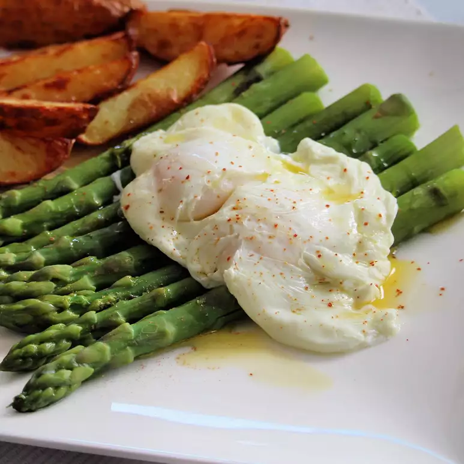

Foolproof Poached Eggs

Description
Delicious, foolproof poached eggs. The vinegar will help the egg whites set more easily.
Ingredients
- 4 organic eggs
- 2 teaspoons white vinegar
- salt and ground black pepper to taste
- 1 pinch dried dill, or to taste
Steps
- Fill a large saucepan with 2 to 3 inches of water and bring to a simmer. Reduce the heat to medium-low, pour in vinegar, and keep the water at a gentle simmer.
- Crack an egg into a small cup. Place cup near the surface of the hot water and gently drop egg into the water. Repeat with remaining eggs. Turn off heat, cover, and let sit until whites are set, 4 minutes. Lift eggs out of pan with a slotted spoon. Season with salt, pepper, and dill.